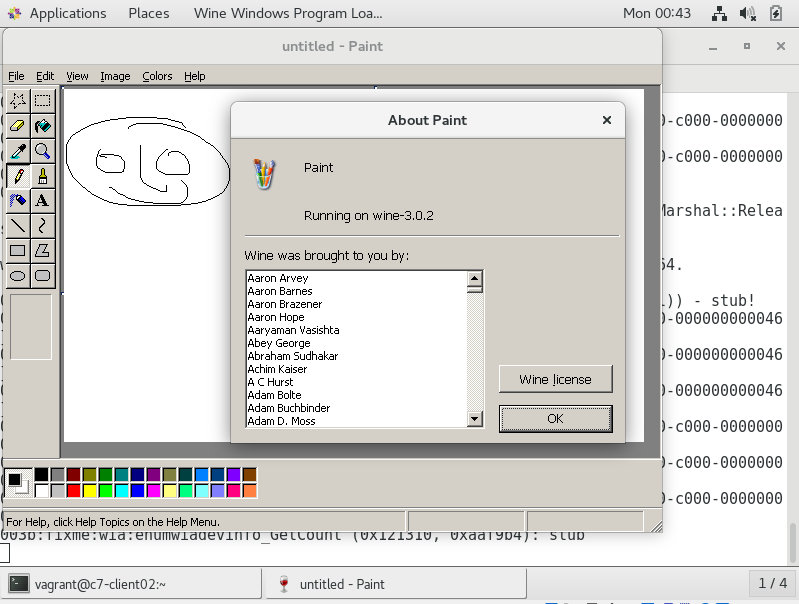
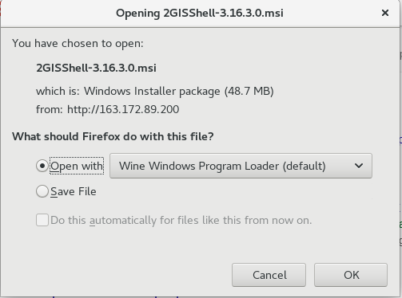
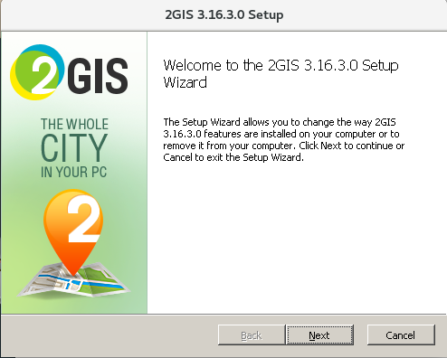
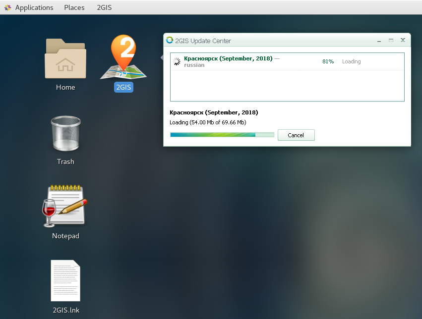
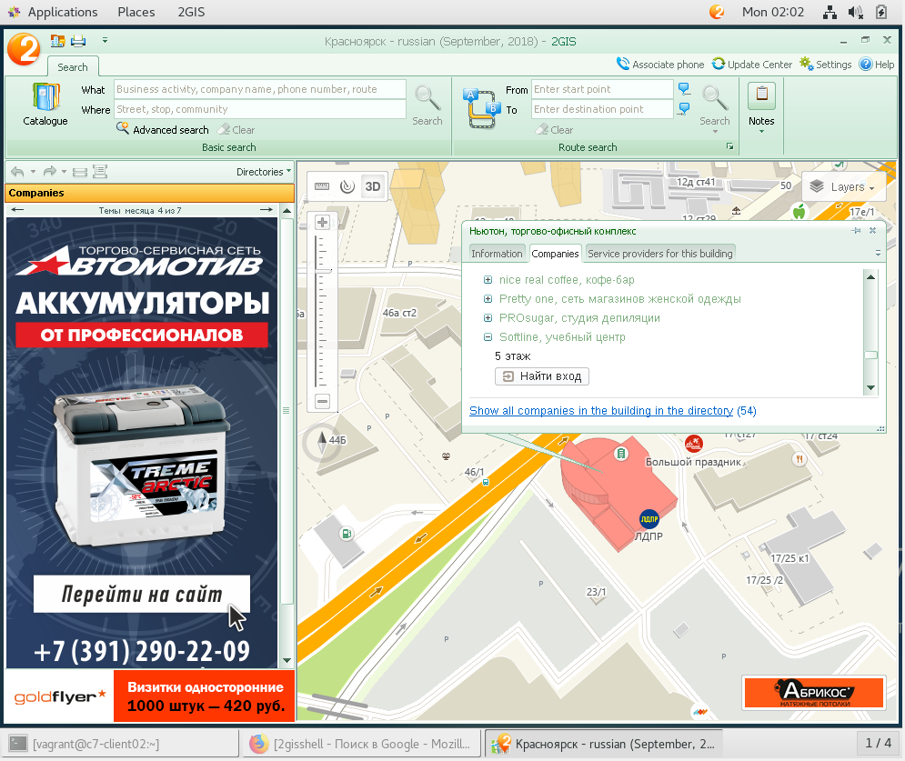

Отделу технического сопровождения в компании "РиК" была поставлена задача импортозамещения программного обеспечения на рабочих станциях пользователей. Первым шагом в этой задачи был поставлен отказ от зарубежной Операционной Системы Microsoft Windows. Предлагается рассмотреть возможность переноса пользовательских компьютеров и их рабочей среды на GNU/Linux. Для переноса на GNU/Linux программ, изначально hfpработаюших в Windows предлагается использовать проект Wine. Вам предлагается настроить среду для запуска классических Win32 приложений в GNU/Linux.
По окончанию данной лабораторной работы вы сможете:
Оглавление
Описание тестовой среды
Предположительное время: 30 минут
Виртуальные машины: ipa.example.com cl.example.com
| Логин | Пароль |
|---|---|
| root | redhat |
| vagrant | vagrant |
В данный момент в компании "РиК" не установлены необходимые пакеты, включающие поддержку wine. Необходимо произвести их установку и предварительную настройку.
EPEL и установка wine.x86_64wine32. Установка пакетов для wine.i686EPEL и установка wine.x86_64Запустите терминал на хосте виртуализации получите доступ к терминалу машины cl.example.com
λ cd c:\VMs\ipa-lab
λ vagrant ssh cl
λ vagrant ssh c7-client01
Last login: Sun Sep 30 17:39:11 2018
----------------------------------------------------------------
CentOS 7.5.1804 built 2018-09-30
----------------------------------------------------------------
[vagrant@c7-client01 ~]$
Установим поддержку репозитория EPEL и поставим оттуда пакеты wine
[vagrant@c7-client01 ~]$ sudo yum -y install epel-release
....
[vagrant@c7-client01 ~]$ sudo yum -y install wine\*
...
Вот и всё! Уже можно проверять запуск приложений! Но у нас пока ещё нет поддержки запуска x32 приложений, давайте её добавим.
wine32. Установка пакетов для wine.i686Установим поддержку репозиториев wine32 и winetricks от harbottle. Поставим пакеты wine.i686 winetricks.
[vagrant@c7-client01 ~]$ sudo yum -y install https://harbottle.gitlab.io/wine32/7/i386/wine32-release.rpm
....
Поставим пакет wine.i686,во время установки загрузится и установится ставится много пакетов i686 архитектуры ввиду требований удовлетворения зависимостей, придётся пару минут подождать.
[vagrant@c7-client01 ~]$ sudo yum -y install wine.i686
...
Проверим, что wine.i686 работает, запустим программы из стандартного набора.
Зайдите под пользователем student c паролем student в графическую среду GNOME 3 Desktop Enviroment. В gnome-terminal дайте команду alternatives --display wine
[vagrant@c7-client01 ~]$ alternatives --display wine
wine - status is auto.
link currently points to /usr/bin/wine32
/usr/bin/wine64 - priority 10
slave wine-preloader: /usr/bin/wine64-preloader
/usr/bin/wine32 - priority 20
slave wine-preloader: /usr/bin/wine32-preloader
Current `best` version is /usr/bin/wine32.
Обратите внимание, что при установленном в системе пакете wine.i686 именно 32 битная версия будет запускаться по умолчанию по вызове команды wine.
Запустите программу wineboot из меню приложений, запустим среду.

В диалоговых окнах c запросом загрузки и установки приложений "Wine Mono Installer" и "Wine Gecko Installer" нажмите Install
Описание пакетов Gecko Mono https://wiki.winehq.org/Gecko - Wine реализация "Internet Explorer" https://wiki.winehq.org/Mono - Открытый проект по реализации ".Net Fremework"
Теперь вы можете запустить стандартные приложения, идущие в комплекте через раздел меню приложений Wine

Мы проверили, что wine работает, по крайней мере он может запускать WIN32 приложения, поставляемые вместе с пакетом wine.
Запустим программу настройки приложения через меню Applications -> Wine -> Wine Configuration

В этом окне мы можем выполнить базовую настройку приложения.
Установите версию Windows в Windows 10. В закладке Application -> Windows Version -> Windows 10

Теперь, когда среда запуска поставлена, и проверена пришло время проверить работу Win32 API приложений на CentOS 7 с установленной средой рабочего стола GNOME 3.
Зайдите под пользователем student c паролем student в графическую среду GNOME 3 Desktop Enviroment. В программе gnome-terminal запустите скрипт winetricks
[vagrant@c7-client01 ~]$ sudo yum -y install epel-release # нет необходимости, если репозиторый EPEL уже добавлен
[vagrant@c7-client01 ~]$ sudo yum -y install https://harbottle.gitlab.io/harbottle-main/7/x86_64/harbottle-main-release.rpm
[vagrant@c7-client01 ~]$ sudo yum -y install winetricks
[vagrant@c7-client01 ~]$ WINEPREFIX=~/.wine32 winetricks -q
Поставить winetrick можно и по другому
Обновлённый скрипт winetricks можно загрузить с оффициального сайта https://github.com/Winetricks/winetricks, файл сделать запускаемым и положить в один из каталогов PATH
Например
[vagrant@c7-client01 ~]$ echo $PATH
[vagrant@c7-client01 ~]$ mkdir ~/bin
[vagrant@c7-client01 bin]$ cd bin
[vagrant@c7-client01 bin]$ wget https://raw.githubusercontent.com/Winetricks/winetricks/master/src/winetricks
[vagrant@c7-client01 bin]$ chmod +x winetricks
[vagrant@c7-client01 ~]$ cd -
Теперь инициализируем среду для запуска Win32 приложений
[vagrant@c7-client01 ~]$ WINEARCH=win32 WINEPREFIX=~/.wine32 wineboot
В диалоговых окнах c запросом загрузки и установки приложений "Wine Mono Installer" и "Wine Gecko Installer" нажмите Install
Описание пакетов Gecko Mono
https://wiki.winehq.org/Gecko - Wine реализация "Internet Explorer"
https://wiki.winehq.org/Mono - Открытый проект по реализации ".Net Fremework"
Запустим winetricks внутри Win32 среды для запуска приложений WINEPREFIX=~/.wine32 и выберем установку приложения mspaint. Для подавления дополнительных предупреждений используем ключ -q.
[vagrant@c7-client01 ~]$ WINEARCH=win32 WINEPREFIX=~/.wine32 winetricks -q
В появившемся окне "Winetricks - choose a wineprrefix" выберем Install an Application -> mspaint
В окне сбора статистики о запуске приложений примите решение и выберите ответ, будете ли вы отправлять разработчикам данные о запуске ваших приложений.
В окне winetricks с сообщением Working around wine bug 657 -- Native mspaint.exe from XP reqires mfc42.dll нажмите OK.
В окне VCRedist Installation нажмите Ja.
В случае появления сообщения
Cannot find cabextractзакройте окно, поставьте пакет
cabextractи повторите запускwinetricks
[vagrant@c7-client01 ~]$ yum install -y cabextract
Закроем окно winetricks и запустим mspaint, сделаем для него ярлык на рабочий стол
[vagrant@c7-client01 ~]$ WINEARCH=win32 WINEPREFIX=~/.wine32 wine mspaint

Создадим ярлык для запуска приложения на рабочем столе GNOME 3
[vagrant@c7-client01 ~]$ cd ~
[vagrant@c7-client01 ~]$ cat <<EOF >Desktop/wine-mspaint.desktop
[Desktop Entry]
Name=MS Paint
Comment=Image Editor
Exec=sh -c "WINEARCH=win32 WINEPREFIX=~/.wine32 wine 'C:\Windows\mspaint.exe'"
Icon=mspaint
Terminal=false
Type=Application
Categories=X-Wine;
X-Desktop-File-Install-Version=0.23
EOF
[vagrant@c7-client01 ~]$ chmod +x Desktop/wine-mspaint.desktop
Запустим программу через ярлык на рабочем столе.
Ура! Программа mspaint запущена и работает в Wine!
Загрузим сторонее Win32 приложение из интернета с помощью браузера Firefox

Запустим его установку в среде Wine


Во время установки приложения установщик создал ярлык для запуска приложения.
Запустим приложение и выберем город.

Теперь можно запускать приложение с ярлыка на рабочем столе.

Приложение работает.
Ура! Мы выполнили все упражнения! Теперь, по желанию, вы можете загрузить и попробовать поставить какое-либо другое ваше часто используемое приложение! Счастливого пути!